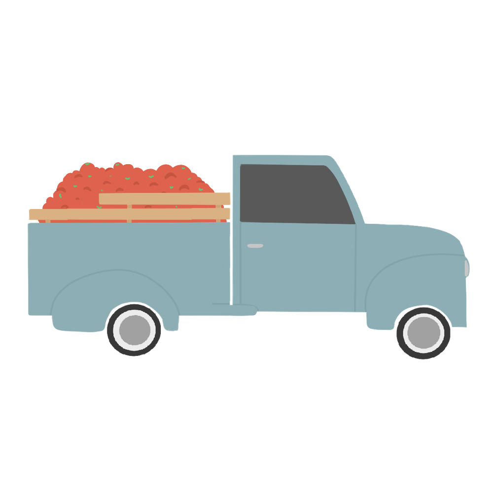
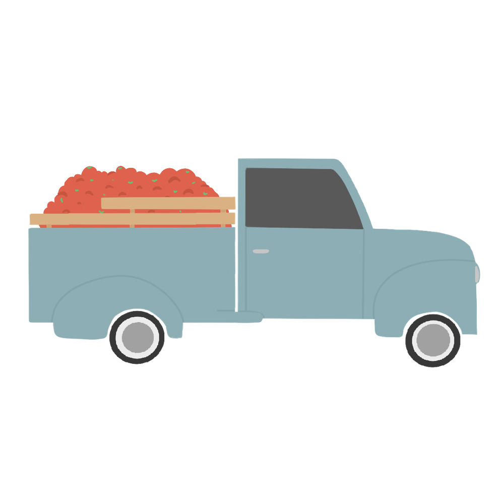
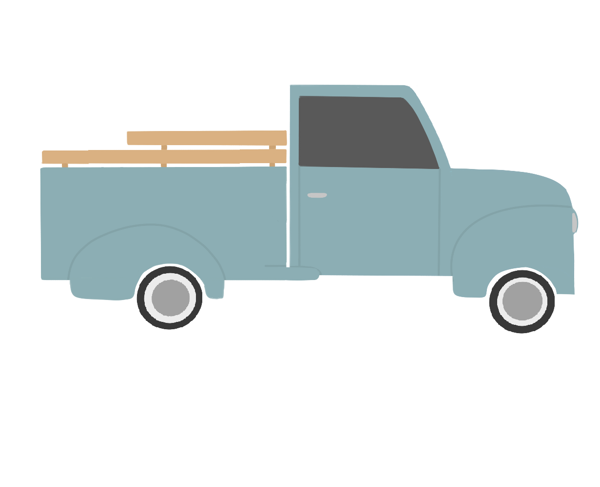

“อมก๋อย” เป็นอำเภอใน จ.เชียงใหม่ มีอากาศเย็นตลอดปี
ทำให้เหมาะสำหรับการท่องเที่ยวทางธรรมชาติที่มีความอุดมสมบูรณ์
ทั้งนี้ ยังเป็นบ้านของกลุ่มชาติพันธุ์กะเหรี่ยงโป มีการทำไร่หมุนเวียน เป็นแหล่งปลูกมะเขือเทศ
และฟักทองแหล่งใหญ่เพื่อส่งออกไปยังหลายพื้นที่ ผลิตผลทั้งสองชนิดถือเป็นรายได้หลักของชุมชนกะเหรี่ยงแห่งนี้
 

“หน้าแล้งไม่มีมะเขือเทศที่ไหนมีแค่กะเบอะดินแค่อมก๋อยที่เดียว” คำพูดของผู้รับซื้อมะเขือเทศ
เพื่อตอกย้ำให้เห็นว่า
น้ำทำให้ที่นี่เป็นแหล่งปลูกมะเขือเทศแห่งหนึ่งที่สำคัญของประเทศไทย

“น้ำสะอาด” จากห้วยน้ำ ลำธาร ถือเป็นหัวใจหลักในการทำเกษตรกรรม รวมถึงเป็นน้ำที่ใช้อุปโภค บริโภค
ในบางปีที่น้ำฝนไม่เพียงพอ เกษตรกรจำเป็นต้องบรรทุกน้ำใส่รถกระบะ เพื่อใช้ทำการเกษตร


จะมีท่อส่งน้ำจากต้นน้ำไปยังบ้านทุกหลัง ให้ทุกคนได้เข้าถึงน้ำสะอาดที่ใช้ในการอุปโภค บริโภค และการเกษตร
น้ำสายนี้ที่เย็นชื่นใจชาวบ้านจะเรียกว่า”น้ำประปาภูเขา